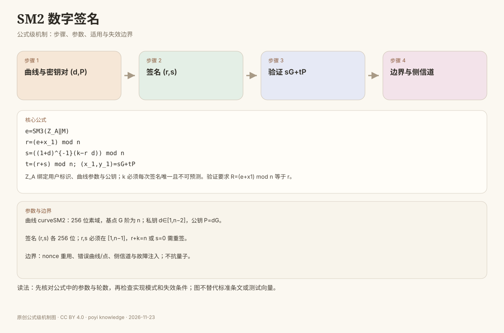
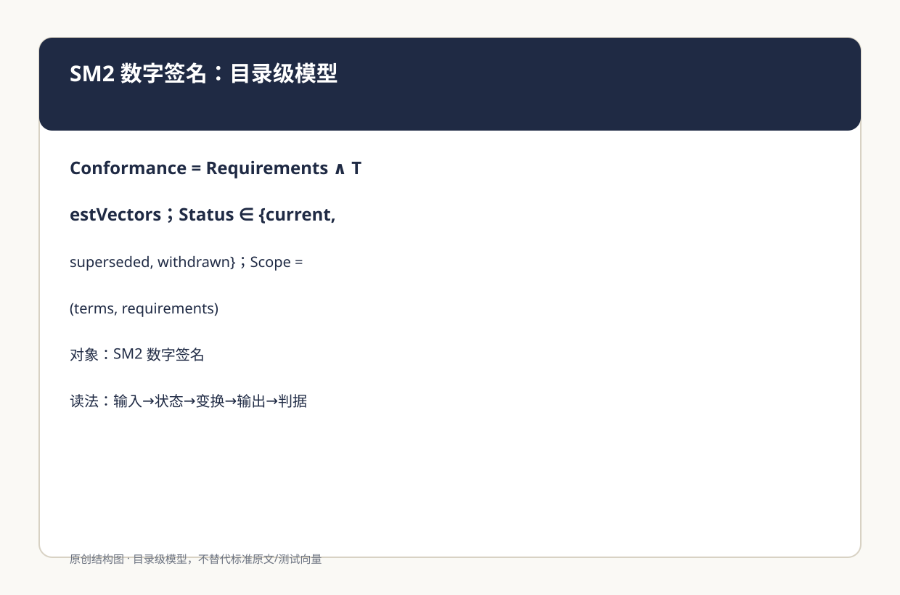

原理与机制
标准：SM2 数字签名（SM2 Digital Signature）。### 曲线与密钥
SM2 签名使用 256 位素域椭圆曲线 curveSM2，基点 G 的阶为 n。私钥 d∈[1,n−2]，公钥 P=dG。### 签名
先计算 e=SM3(Z_A‖M)，其中 Z_A 绑定用户标识、曲线参数与公钥。取随机 k∈[1,n−1]，计算 (x1,y1)=kG，令
若 r=0 或 r+k=n 则重取 k。再计算
s=((1+d)^{-1}(k−r d)) mod n；
若 s=0 则重取 k。签名为 (r,s)。### 验证
检查 r,s∈[1,n−1]；令 t=(r+s) mod n，t=0 则拒绝；计算 (x1,y1)=sG+tP，R=(e+x1) mod n；仅当 R=r 时接受。

为什么重要
SM2 把 SM3 摘要、曲线点运算与用户标识绑定在一个签名流程中，适合证书、TLS 身份认证与电子签章。它不使用 ECDSA 的随机点 x 直接截断，而是把 e、r、s 组成闭环验证。
应用与实例
1.生成密钥：私钥在密码模块内生成，公钥经证书或带外通道认证。2.计算 Z_A：使用标准规定的 ENTL、ID、曲线参数与公钥，不能省略用户标识。3.签名 nonce：k 必须唯一、不可预测，最好由 DRBG 或硬件生成。4.验证：检查曲线、点、阶与 r/s 范围，再算 t 和 R。### 不能怎么用
不能复用 k；不能跳过 Z_A；不能只验 r 不验 s；不能把 SM2 当抗量子算法。

边界与攻击面
1.nonce 重用：同一 d 与同一 k 签两条消息会暴露私钥；这是最直接的致命错误。2.曲线/点校验缺失：未验证公钥在 curveSM2 上、阶正确，可能遭无效曲线或小群攻击。3.侧信道与故障：标量乘的时序、缓存与故障注入可恢复 d；需要常数时间与冗余。4.协议层：未绑定身份、域分离或证书链，会把有效签名用于错误上下文。
历史与背景
SM2 于 2010 年发布，2012 年进入 GM/T 0003 序列，2016 年发布 GB/T 32918 系列；RFC 8998（2021）把 SM2 签名与 curveSM2 用于 TLS 1.3。签名格式、Z_A 计算与曲线参数以所声明标准版本为准；该条目不替代标准条款。
技术参数与复算边界
该条目的形式模型是 (S=\min_i S_i,\quad S_i\in{\text{密钥强度},\text{分组安全},\text{实现安全}})。输入：输入：SM2 数字签名的公开参数、密钥/随机数与消息；变量说明：S 为综合安全强度；各分量取最小值，不能只看密钥位数。 预期输出：按 SM2 数字签名 的规范执行后得到可验证的输出或可比较的优势界。 复算必须给出输入、步骤、输出和单位；示例只演示流程，不替代标准测试向量。
复杂度由密钥长度、分组/状态规模、轮数、随机数质量和敌手模型共同决定；参数越界、版本差异与实现侧信道都可能使公式结论失效。已登记限制：该条目只给出形式模型与可复算步骤，不声称已完成生产实现、侧信道认证或第三方安全评估。
参数与状态规模
公式 (S=\min_i S_i,\quad S_i\in{\text{密钥强度},\text{分组安全},\text{实现安全}}) 的输入、输出和单位必须逐项登记；复算顺序为：1. 读取标准规定的密钥/分组/模式参数 2. 按标准表换算等效强度 3. 取最弱分量作为系统强度。
状态规模、密钥长度、分组长度和轮数决定复杂度；这些量不能从标题推断，必须以标准或实现文档为准。
测试向量与实现边界
标准测试向量只证明某组输入在某个实现中产生了预期输出，不证明所有参数都安全。记录测试向量时至少要写：算法/模式、密钥、明文或消息、随机数/IV、输出长度、实现版本。该条目已登记的限制是：该条目只给出形式模型与可复算步骤，不声称已完成生产实现、侧信道认证或第三方安全评估。
如果实现使用查表、分支或可变时间操作，算法层的证明不能替代侧信道评估；如果协议层没有认证，算法层的机密性也不能阻止替换或重放。
逐步示例与核验
形式模型与复算步骤
[S=\min_i S_i,\quad S_i\in{\text{密钥强度},\text{分组安全},\text{实现安全}}]
SM2 数字签名的公开参数、密钥/随机数与消息；变量说明：S 为综合安全强度；各分量取最小值，不能只看密钥位数。1.读取标准规定的密钥/分组/模式参数。2.按标准表换算等效强度。3.取最弱分量作为系统强度。边界：公式只覆盖已登记的参数与假设；参数取值、标准版本和实现细节仍以来源为准。
参考出处
- Wikipedia search entry for SM2 数字签名. https://zh.wikipedia.org/w/index.php?search=SM2%20%E6%95%B0%E5%AD%97%E7%AD%BE%E5%90%8D
- Handbook of Applied Cryptography (Menezes, van Oorschot, Vanstone). https://www.cacr.math.uwaterloo.ca/hac/